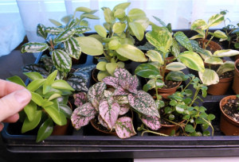

Langkah-langkah membuat tanaman mini
Hadirnya tanaman berukuran mini akan memperindah halaman atau ruangan dan juga memberi kesegaran. Tanaman mini dapat dibuat secara biologis (genetik), kimiawi, maupun fisik. Cara biologis dan kimiawi sudah dilakukan oleh orang awam. Lain halnya dengan cara fisik yang dapat dilakukan oleh siapa saja asalkan tahu langkah-langkahnya.

Langkah-langkah:
1.Siapkan bahan tanaman yang akan diminikan, misalnya dari biji.
2. Biji-biji disemaikan dalam media pasir campur humus. Sekitar 3 bulan kemudian pindahkan ke polibag atau pot pembesaran.
3. Setelah bentuknya bagus untuk diminikan tanaman siap dipindahkan ke pot hias.
4. Akar-akar yang panjang dipotong sambil diratakan permukaan bawah bola akarnya.
5. Tanaman diletakkan ke dalam pot hias yang lubang drainasenya telah dilapisi dengan plastik strimin. Meletakkannya tidak sepenuhnya dalam pot, tapi setengah akarnya dibiarkan di atas media.
6. Sisa tangkai daun dirapikan dengan cara dipotong miring menggunakan pisau yang tajam.
7. Tanah pada akar yang menyembul ini lalu dikorek agat terlihat jelas.
8. Akar bagian atas yang telah dikorek lalu disemprot dengan air bersih.
9. Tanam lumut di atas media.
10. Lumut diratakan dengan tangan.
11. Tanaman mini yang sudah jadi.
Back
|